Prática 2: Regressão linear
Sara Mortara
4 de dezembro de 2018
Sempre começamos definindo o diretório de trabalho. A recomendação é que você trabalhe dentro do diretório ‘praticas’ na pasta ‘atividadesR’. Assim, você precisa apenas alterar o caminho para o seu diretório de trabalho e não para os dados.
Assumindo que:
- conhecemos bem os dados
- os dados seguem uma distribuição normal
- queremos avaliar se uma (ou mais variáveis) tem efeito linear sobre outra
Vamos usar regressão linear para responder algumas perguntas. Apesar das premissas serem um pouco óbvias, não é trivial que qualquer usuário(a) de uma regressão linear tenha claramente assumido essas premissas. Mas você não é desses(as)…
Um detalhe importante sobre as pRáticas
Sempre que ajustarmos um modelo vamos ajustar dentro de um contexto. Os modelos não estão aí soltos no mundo, os modelos são a representação de uma hipótese que queremos testar. A hipótese (ou múltiplas hipóteses) está contextualizada em algum campo teórico do conhecimento.
Todos os exercícios práticos serão apresentados como:
Pergunta
Hipótese
Previsão
Modelos
1. A dieta da lagarta

Pergunta: compostos químicos da folha afetam o crescimento de lagartas?
Hipótese: toxicidade do tanino na folha diminui o crescimento de lagartas
Previsão: lagartas que consomem folhas com maior quantidade de tanino irão crescer menos
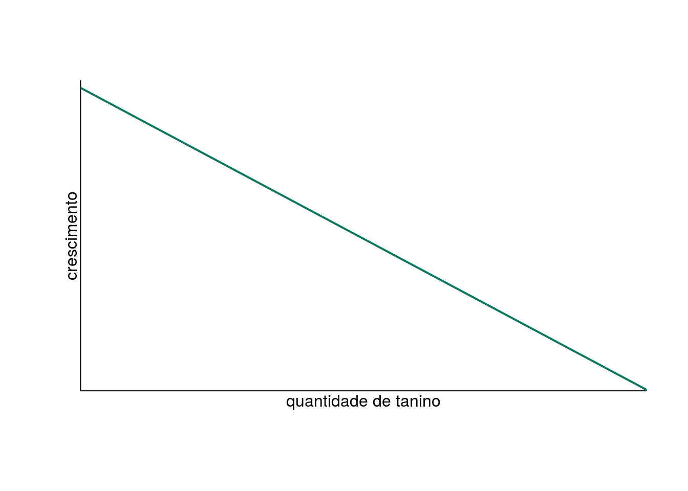
Modelo: \[Y = \alpha + \beta X \]
onde \(Y\) é a variável resposta crescimento e \(X\) é a variável resposta quantidade de tanino.
No R, a notação seria y ~ x . Vamos ao R.
# lendo os dados
lag <- read.table("dados/regression.txt", header=TRUE)Vamos conhecer os dados. Primeiro o cabeçalho e o sumário.
# checando as seis primeiras linhas dos dados
head(lag)## growth tannin
## 1 12 0
## 2 10 1
## 3 8 2
## 4 11 3
## 5 6 4
## 6 7 5# checando o sumário das variáveis
summary(lag)## growth tannin
## Min. : 2.000 Min. :0
## 1st Qu.: 3.000 1st Qu.:2
## Median : 7.000 Median :4
## Mean : 6.889 Mean :4
## 3rd Qu.:10.000 3rd Qu.:6
## Max. :12.000 Max. :8Agora vamos visualizar a distribuição da variável resposta crescimento em um boxplot.
# boxplot do crescimento
boxplot(lag$growth, ylab="crescimento")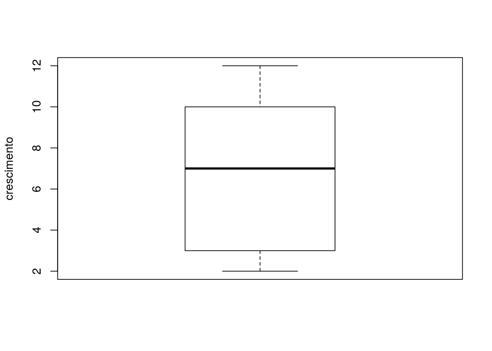
E vamos olhar qual a relação entre quantidade de tanino na dieta e crescimento das lagartas.
# visualizando a relação entre crescimento e tanino em um gráfico
plot(growth ~ tannin, data=lag,
xlab="Quantidade de tanino", ylab="Crescimento")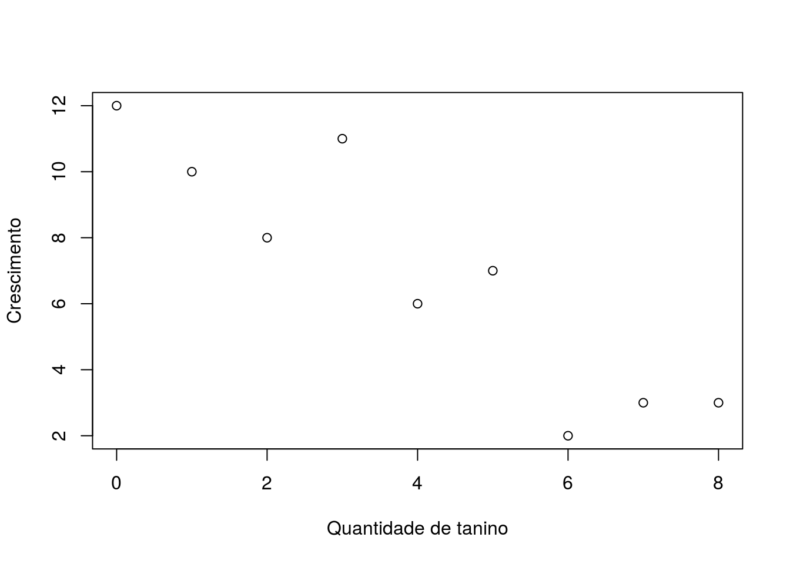
Vamos então construir o modelo linear entre as duas variáveis no R. Note que usamos a mesma notação do gráfico growth ~ tannin para criar o modelo.
# criando o modelo linear e guardando no objeto mod.lag
mod.lag <-lm(growth ~ tannin, data=lag)Vamos checar a estimativa dos parâmetros de intercepto e inclinação:
coef(mod.lag)## (Intercept) tannin
## 11.755556 -1.216667Existe um efeito negativo da quantidade de tanino na dieta no crescimento das lagartas.
E agora vamos olhar para o sumário do modelo. Preste mais atenção ao valor da estimativa dos parâmetros e do intervalo de confiança da estimativa do que no valor de p .
# checando o sumário do modelo
summary(mod.lag)##
## Call:
## lm(formula = growth ~ tannin, data = lag)
##
## Residuals:
## Min 1Q Median 3Q Max
## -2.4556 -0.8889 -0.2389 0.9778 2.8944
##
## Coefficients:
## Estimate Std. Error t value Pr(>|t|)
## (Intercept) 11.7556 1.0408 11.295 9.54e-06 ***
## tannin -1.2167 0.2186 -5.565 0.000846 ***
## ---
## Signif. codes: 0 '***' 0.001 '**' 0.01 '*' 0.05 '.' 0.1 ' ' 1
##
## Residual standard error: 1.693 on 7 degrees of freedom
## Multiple R-squared: 0.8157, Adjusted R-squared: 0.7893
## F-statistic: 30.97 on 1 and 7 DF, p-value: 0.0008461O ajuste do modelo aos dados
plot(growth ~ tannin, data=lag, bty='l', xlab="quantidade de tanino",
ylab="crescimento", pch=19)
abline(mod.lag, lwd=2)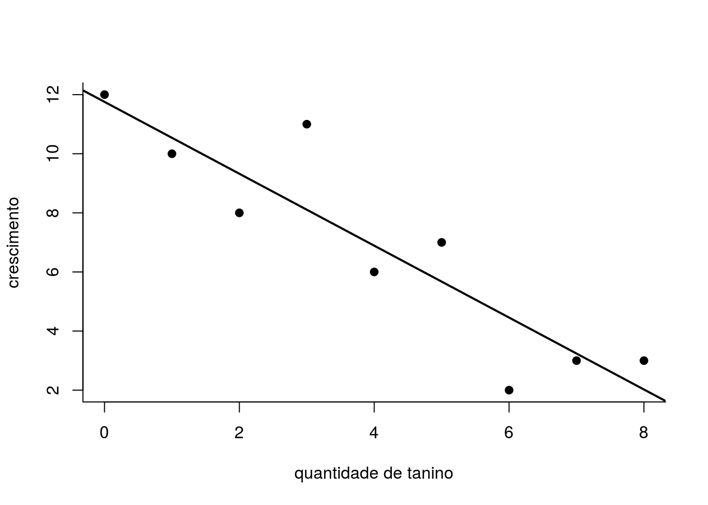
O ajuste parece bom, vamos fazer a inspeção dos resíduos do modelo.
par(mfrow=c(2,2))
plot(mod.lag)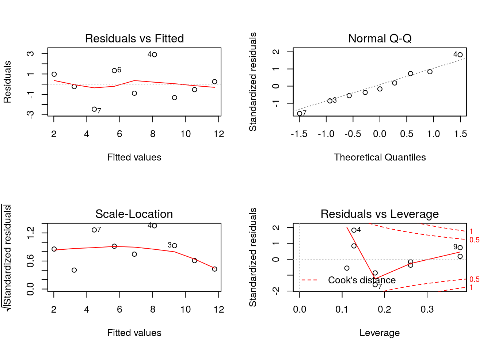
par(mfrow=c(1,1))2. Gênero e remuneração

Pergunta: mulheres ainda recebem menos do que homem?
Hipótese: homens recebem mais do que mulheres
Previsão:
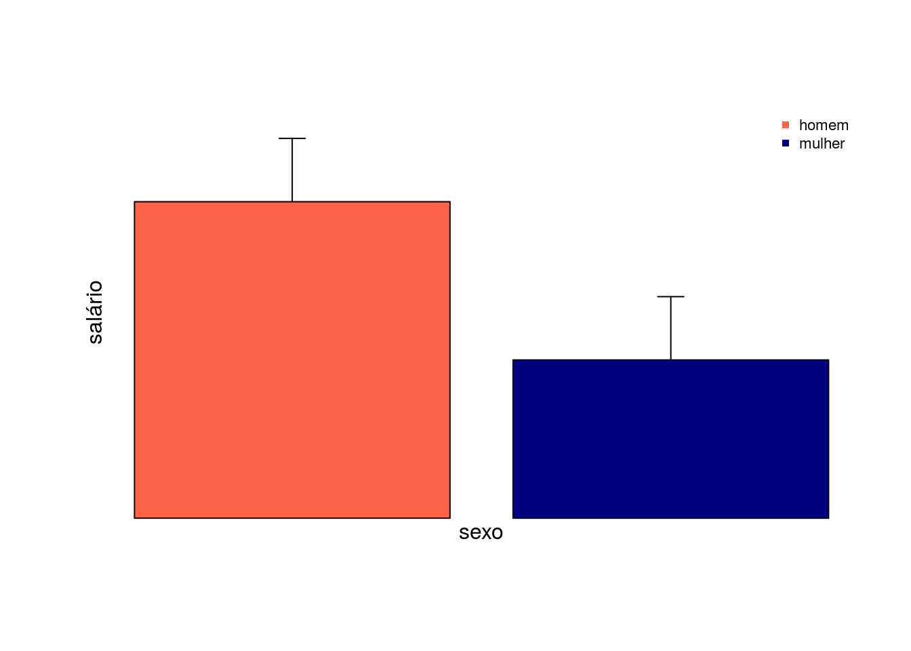
Modelo:
\[Y = \alpha + \beta X \]
onde \(Y\) é a variável resposta salário e \(X\) é a variável preditora sexo.
No R, a notação seria y ~ x . Vamos ao R.
# lendo os dados
sal <- read.csv("dados/salarios.csv")Vamos conhecer mais os dados:
# lendo as seis primeiras linhas
head(sal)## salario sexo
## 1 2920 H
## 2 2768 H
## 3 2798 H
## 4 2514 H
## 5 2414 H
## 6 2895 HFazendo o sumário do objeto sal :
# sumario dos dados
summary(sal)## salario sexo
## Min. :1524 H:30
## 1st Qu.:1966 M:30
## Median :2292
## Mean :2325
## 3rd Qu.:2666
## Max. :3080Note que a variável preditora agora é categórica. Vamos olhar a média e o desvio padrão do salário de homens e mulheres. Para isso, vamos usar a função tapply que aplica uma função a um vetor, condicionada a um fator.
# calculando a media por sexo com a funcao tapply
# X = vetor que quer aplicar a funcao
# INDEX = fator condicionante
# FUN = funcao a ser aplicada
tapply(X=sal$salario, INDEX=sal$sexo, FUN=mean)## H M
## 2675.133 1974.133Vamos fazer o mesmo, mas agora com o desvio padrão.
tapply(X=sal$salario, INDEX=sal$sexo, FUN=sd)## H M
## 205.7888 220.8101Vamos visualizar os dados em um gráfico:
plot(salario ~ sexo, data=sal)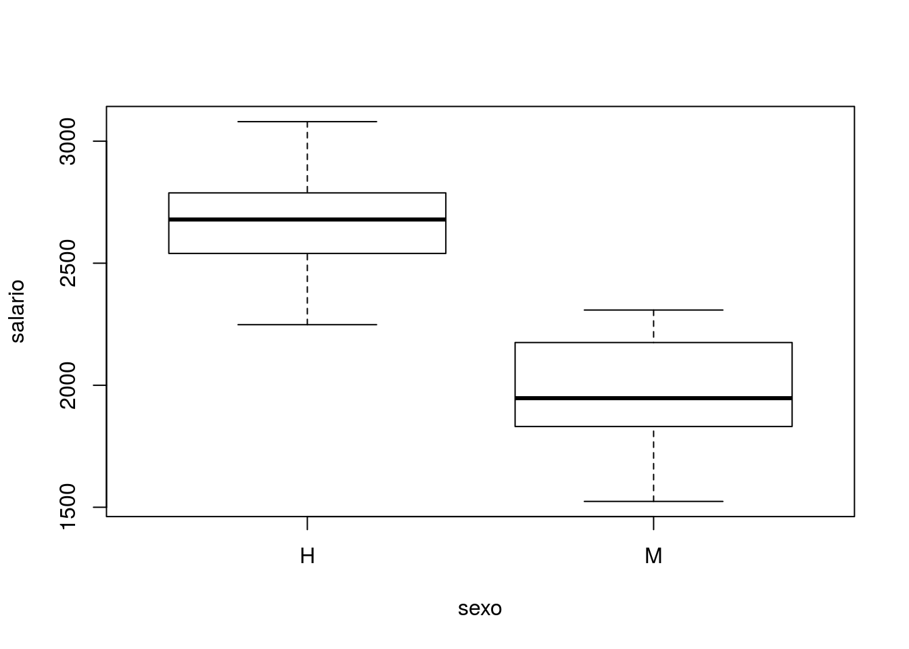
Note que o comando de gráfico plot aplicado à relação entre uma variável contínua e outra categórica resulta em um gráfico de boxplot.
Vamos então construir o modelo linear entre as variáveis salário e sexo no R.
mod.sal <- lm(salario ~ sexo, data=sal)Vamos verificar os parâmetros estimados pelo modelo com a função coef .
coef(mod.sal)## (Intercept) sexoM
## 2675.133 -701.000Neste caso, o valor do intercepto (\(\alpha\)) equivale à media de salário dos homens prevista pelo modelo. A média de salário das mulheres é somatório do valor do intercepto e da inclinação (\(\beta\)). Note que o valor negativo de \(\beta\) representa que a previsão média de salário das mulheres é menor do que a dos homens.
Vamos olhar o sumário do modelo linear:
summary(mod.sal)##
## Call:
## lm(formula = salario ~ sexo, data = sal)
##
## Residuals:
## Min 1Q Median 3Q Max
## -450.13 -138.63 -5.63 152.37 404.87
##
## Coefficients:
## Estimate Std. Error t value Pr(>|t|)
## (Intercept) 2675.13 38.97 68.65 <2e-16 ***
## sexoM -701.00 55.11 -12.72 <2e-16 ***
## ---
## Signif. codes: 0 '***' 0.001 '**' 0.01 '*' 0.05 '.' 0.1 ' ' 1
##
## Residual standard error: 213.4 on 58 degrees of freedom
## Multiple R-squared: 0.7361, Adjusted R-squared: 0.7316
## F-statistic: 161.8 on 1 and 58 DF, p-value: < 2.2e-16O ajuste do modelo aos dados
Vamos agora usar a função predict para calcular os valores previstos pelo modelo. O mesmo método funciona quando temos uma variável preditora contínua. Porém, como no caso de uma preditora contínua temos facilmente a previsão do modelo com a função abline nós não usamos a função predict .
# calculando os valores previstos pelo modelo
previsto <- predict(mod.sal, se.fit=TRUE)
previsto## $fit
## 1 2 3 4 5 6 7 8
## 2675.133 2675.133 2675.133 2675.133 2675.133 2675.133 2675.133 2675.133
## 9 10 11 12 13 14 15 16
## 2675.133 2675.133 2675.133 2675.133 2675.133 2675.133 2675.133 2675.133
## 17 18 19 20 21 22 23 24
## 2675.133 2675.133 2675.133 2675.133 2675.133 2675.133 2675.133 2675.133
## 25 26 27 28 29 30 31 32
## 2675.133 2675.133 2675.133 2675.133 2675.133 2675.133 1974.133 1974.133
## 33 34 35 36 37 38 39 40
## 1974.133 1974.133 1974.133 1974.133 1974.133 1974.133 1974.133 1974.133
## 41 42 43 44 45 46 47 48
## 1974.133 1974.133 1974.133 1974.133 1974.133 1974.133 1974.133 1974.133
## 49 50 51 52 53 54 55 56
## 1974.133 1974.133 1974.133 1974.133 1974.133 1974.133 1974.133 1974.133
## 57 58 59 60
## 1974.133 1974.133 1974.133 1974.133
##
## $se.fit
## [1] 38.9671 38.9671 38.9671 38.9671 38.9671 38.9671 38.9671 38.9671
## [9] 38.9671 38.9671 38.9671 38.9671 38.9671 38.9671 38.9671 38.9671
## [17] 38.9671 38.9671 38.9671 38.9671 38.9671 38.9671 38.9671 38.9671
## [25] 38.9671 38.9671 38.9671 38.9671 38.9671 38.9671 38.9671 38.9671
## [33] 38.9671 38.9671 38.9671 38.9671 38.9671 38.9671 38.9671 38.9671
## [41] 38.9671 38.9671 38.9671 38.9671 38.9671 38.9671 38.9671 38.9671
## [49] 38.9671 38.9671 38.9671 38.9671 38.9671 38.9671 38.9671 38.9671
## [57] 38.9671 38.9671 38.9671 38.9671
##
## $df
## [1] 58
##
## $residual.scale
## [1] 213.4316Queremos selecionar apenas o valor médio de cada categoria e o erro padrão da estimativa.
# gravando a media prevista pelo modelo para cada categoria em um objeto
previsto.fit <- previsto$fit
# vamos usar a funcao tapply para calcular a media do previsto por categoria
## vamos gravar o resultado em um objeto
med.prev <- tapply(X=previsto.fit, INDEX=sal$sexo, FUN=mean)
med.prev## H M
## 2675.133 1974.133## vamos guardar o valor do erro padrão estimado em um objeto
se.prev <- mean(previsto$se.fit)
se.prev## [1] 38.9671Vamos criar os objetos com os valores observados da média e do erro padrão dos salários dos homens e mulheres. Já calculamos anteriormente a média e o desvio padrão, mas não salvamos em objetos. Agora vamos salvar e ao invés de calcular o desvio padrão, calcularemos o erro padrão.
O erro padrão nada mais é do que o desvio padrão dividido pela raiz quadrada do número de observações.
O desvio padrão é calculado como:
\[ \sigma = \sqrt{\frac{\sum(x_{i} - \mu)^2}{n-1}}\]
O erro padrão (SE) é:
\[ SE = \frac{\sigma}{\sqrt{n}}\]
No pacote básico do R não temos uma função para calcular o erro padrão. Mas é simples! Só precisamos dividir o resultado da funçao sd pela raiz quadrada do número de observações.
# média de salário por categoria
med.obs <- tapply(X=sal$salario, INDEX=sal$sexo, FUN=mean)
med.obs## H M
## 2675.133 1974.133# desvio padrao observado
sd.obs <- tapply(X=sal$salario, INDEX=sal$sexo, FUN=sd)
se.obs <- sd.obs/sqrt(30) # temos 30 observações para cada sexo
se.obs## H M
## 37.57172 40.31422BÔNUS

Se uma função não existe no R, podemos criá-la! Para isso, usamos a função function . Vamos criar uma função para calcular o erro padrão no R.
# criando a função
se <- function(x) {
sd(x)/sqrt(length(x))
}Vamos testar a função:
se(sal$salario)## [1] 53.18418Vamos comparar com o cálculo na mão:
sd(sal$salario)/sqrt(length(sal$salario))## [1] 53.18418Qual a vantagem? Usar apenas quatro caracteres s e ( )!
Voltando ao gráfico…
Agora vamos confrontar os valores observados com os esperados pelo modelo. O círculo amarelo e o segmento amarelo representam respectivamente a média e o erro padrão estimados pelo modelo.
# grafico de barras com a media de salario por categoria
barplot(med.obs, ylim=c(0,med.obs[1]+50), ylab="salário", xlab="sexo",
col=c("tomato", "navyblue"))
# plotando o erro padrão observado por categoria
arrows(x0=c(.7,1.9), x1=c(.7,1.9), y0=med.obs, y1=med.obs+se.obs, length = .1, angle=90)
# plotando a média esperada pelo modelo
points(med.prev ~ c(.7, 1.9), pch=19, col="yellow")
# plotando o erro padrão esperado por categoria
arrows(x0=c(.7,1.9), x1=c(.7,1.9), y0=med.prev, y1=med.prev+se.prev,
length = .1, angle=90, col="yellow")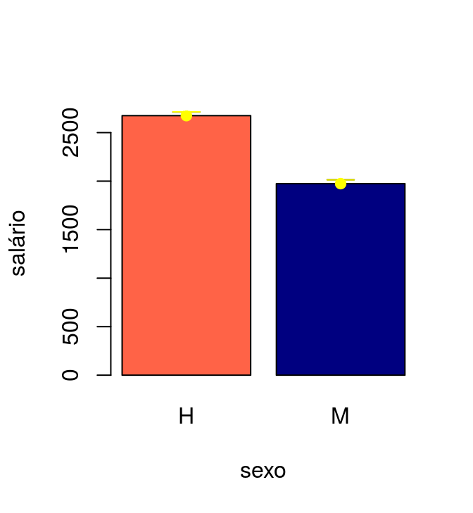
3. Nem tudo na vida é linear
Imagine um cenário em que eu conheço bem meus dados, minha variável resposta segue uma distribuição normal, porém minha variável resposta não tem uma relação linear com a variável preditora. Vamos ver o que podemos fazer para encontrar um modelo que se ajuste bem a esse dado.
Vamos tomar como exemplo um estudo que avaliou o efeito do distúrbio humano no estabelecimento de ninhos de pardal Passer domesticus. Observou-se que o grande número de pedestres nas proximidades do local de estabelecimento dos ninhos, acarretava uma diminuição na densidade dos pardais. Porém, locais com baixa circulação de pedestres tinham também um número baixo de pardais.

Pergunta: A alta circulação de pedestres reduz o número de ninhos do pardal Passer domesticus?
Hipótese: Distúrbio causado pela alta quantidade de pedestres ao redor das áreas de nidificação do pardal, causa a redução no número de ninhos, porém uma circulação moderada de pessoas não diminui a densidade dos pardais.
Previsão:
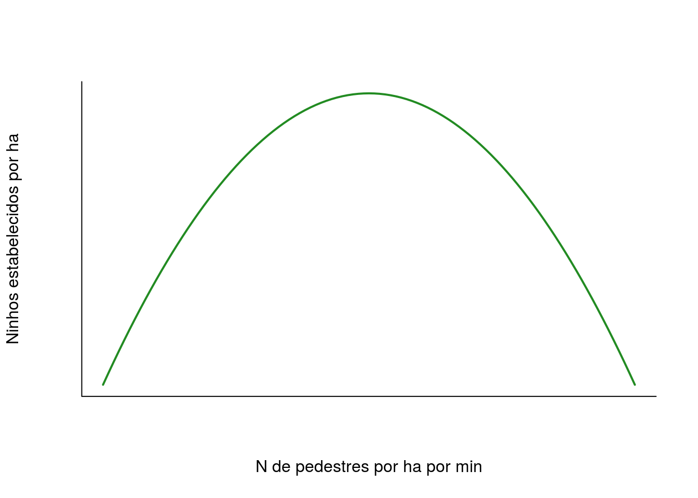
Vamos ler o conjunto de dados e testar a hipótese.
# lendo os dados no R
pardal <- read.csv("dados/pardal.csv")Vamos inpecionar os dados:
# seis primeiras linhas
head(pardal)## pedestres pardal
## 1 0.0 10.40
## 2 0.2 83.98
## 3 0.4 25.57
## 4 0.6 155.44
## 5 0.8 39.79
## 6 1.0 108.65# sumario dos dados
summary(pardal)## pedestres pardal
## Min. : 0 Min. : 0.0
## 1st Qu.:10 1st Qu.:114.0
## Median :20 Median :172.4
## Mean :20 Mean :161.1
## 3rd Qu.:30 3rd Qu.:216.0
## Max. :40 Max. :300.0Vamos olhar para a distribuição dos dados de densidade do pardal em um histograma.
# histograma da densiadade do pardal
hist(pardal$pardal)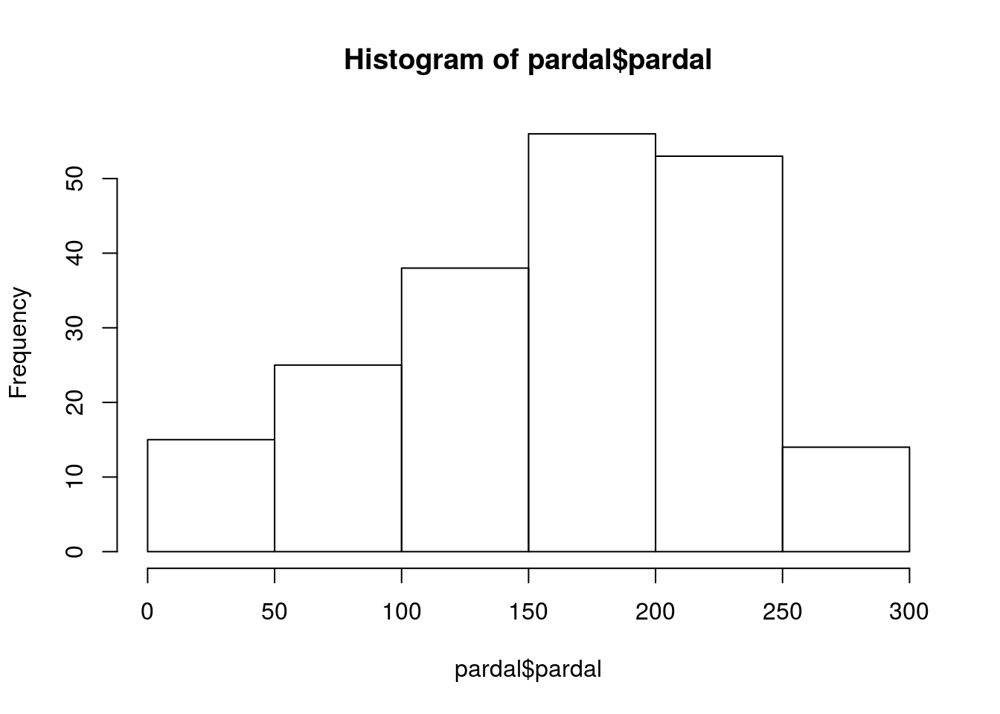
Vamos então olhar para a relação entre as duas variáveis.
plot(pardal ~ pedestres, data=pardal,
xlab="N pedestres por hectare min",
ylab="Densidade de pardais por hectare")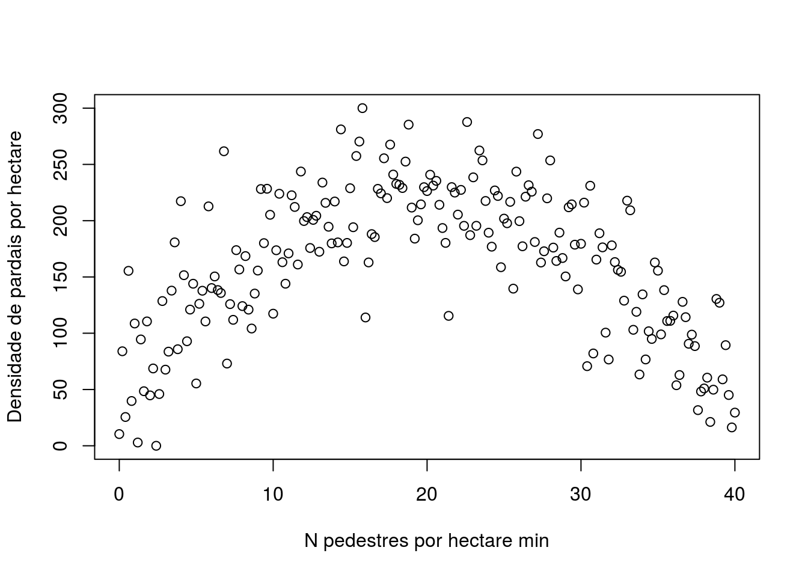
Como podemos modelar essa relação? Faremos isso usando um polinômio de segundo grau: \(x + x^2\).
Como seria a notação desse modelo?
\[Y = \alpha + \beta_{1}X + \beta_{2}X^2\]
Agora nossa variável preditora número de pedestres, assume uma forma de polinômio de segundo grau. Vamos modelar isso no R usando a função I que faz simplesmente forçar a notação matemática que estamos estabelecendo.
mod.par <- lm(pardal ~ pedestres + I(pedestres^2), data=pardal)Vamos olhar para os coeficientes do modelo usando a função coef .
# guardando os coeficientes do modelo em um objeto
coef.par <- coef(mod.par)
coef.par## (Intercept) pedestres I(pedestres^2)
## 48.6084885 17.5276798 -0.4452299E agora vamos olhar para o sumário dos modelo. Atente para o valor da estimativa dos parâmetros e do erro estimado. Estamos mais preocupados com a intensidade do efeito do que com o valor de p. :P
# olhando o sumario do modelo
summary(mod.par)##
## Call:
## lm(formula = pardal ~ pedestres + I(pedestres^2), data = pardal)
##
## Residuals:
## Min 1Q Median 3Q Max
## -104.363 -25.881 1.937 23.581 114.481
##
## Coefficients:
## Estimate Std. Error t value Pr(>|t|)
## (Intercept) 48.60849 8.30469 5.853 1.97e-08 ***
## pedestres 17.52768 0.95924 18.272 < 2e-16 ***
## I(pedestres^2) -0.44523 0.02321 -19.181 < 2e-16 ***
## ---
## Signif. codes: 0 '***' 0.001 '**' 0.01 '*' 0.05 '.' 0.1 ' ' 1
##
## Residual standard error: 39.64 on 198 degrees of freedom
## Multiple R-squared: 0.651, Adjusted R-squared: 0.6474
## F-statistic: 184.6 on 2 and 198 DF, p-value: < 2.2e-16O ajuste do modelo aos dados
# plotando os dados
plot(pardal ~ pedestres, data=pardal, las=1, bty="l",
xlab="N pedestres por hectare min",
ylab="Densidade de pardais por hectare")
# usando a funcao curve para plotar o previsto pelo modelo no formato de polinomio
## a + bx + cx^2
curve(coef.par[1] + coef.par[2]*x + coef.par[3]*x^2, add=TRUE, lwd=2)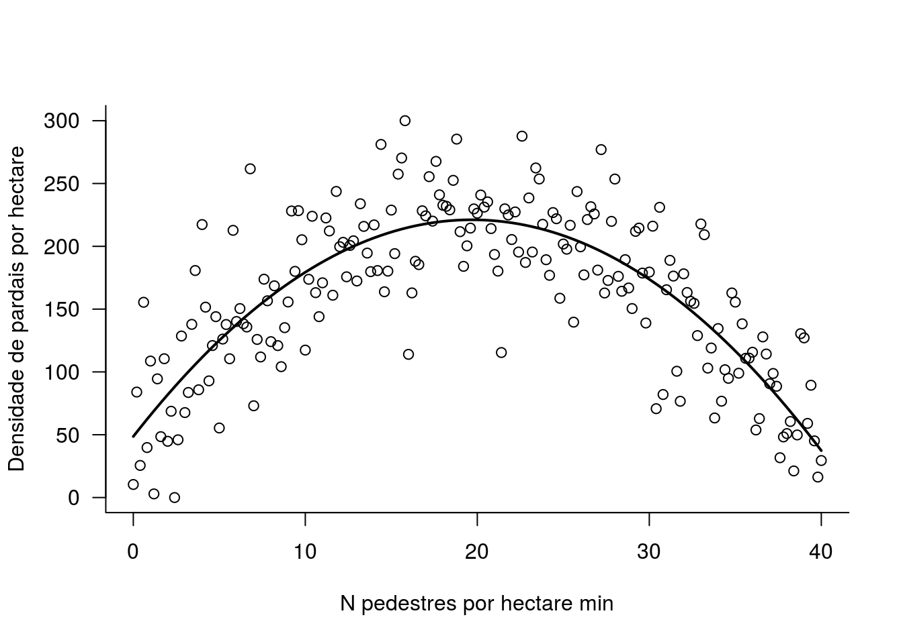